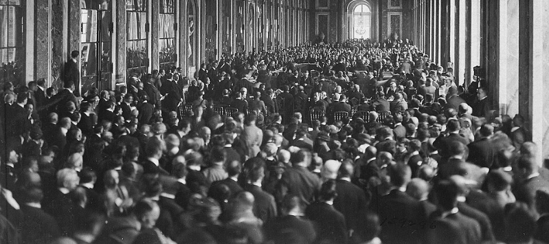
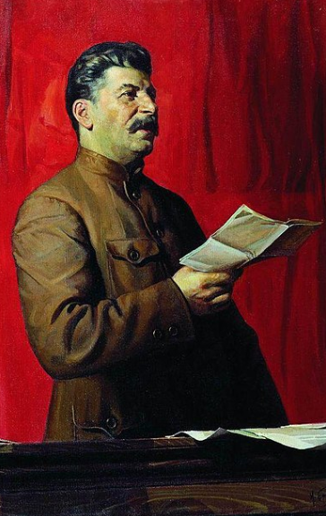
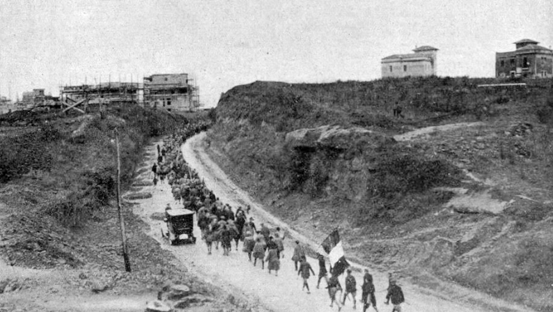
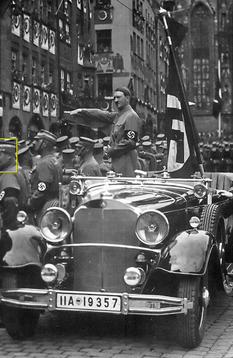
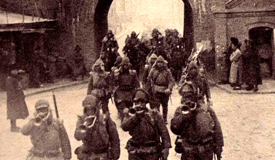
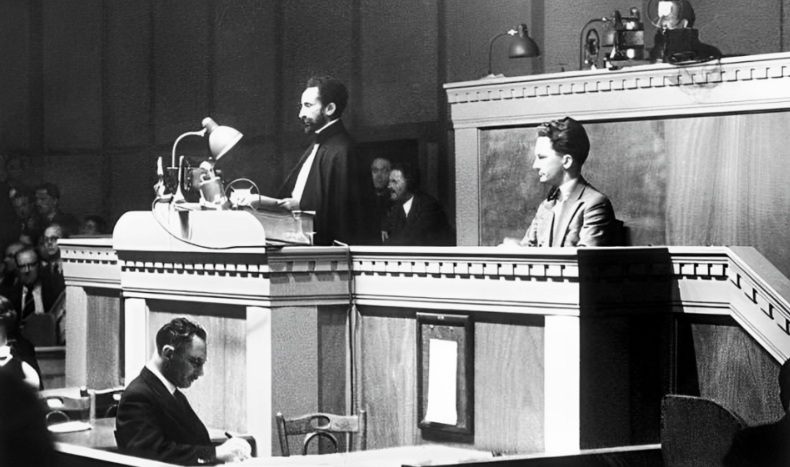
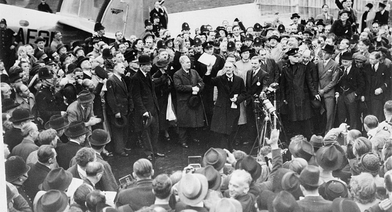
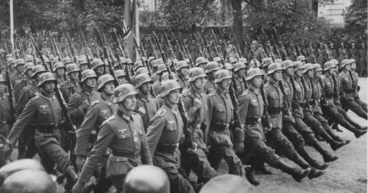
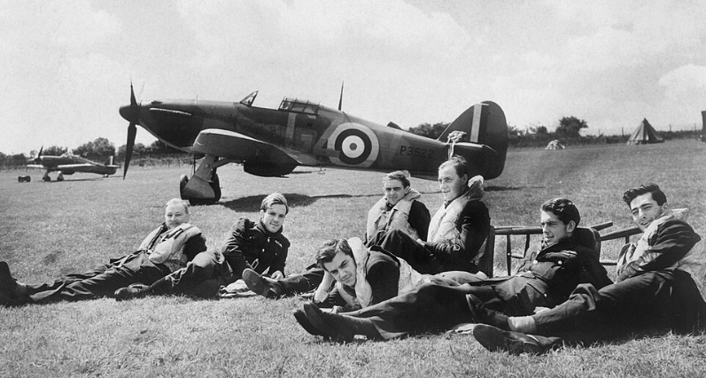
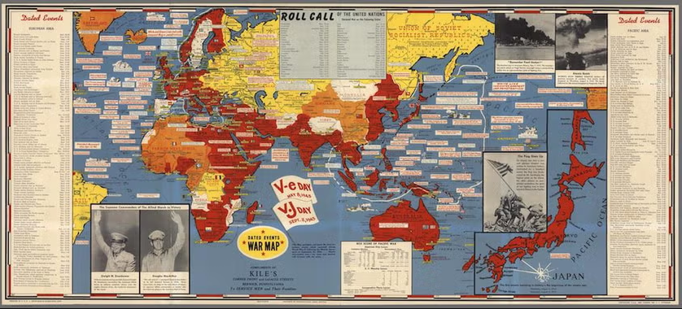

Core Objectives
- Trace the rise of fascism and totalitarianism in Europe and Asia, linking economic instability to political extremism.
- Evaluate the failure of the League of Nations and the policy of appeasement (Munich Conference) in halting Axis expansion.
- Analyze the military effectiveness of the German Blitzkrieg strategy during the invasion of Poland and the fall of France.
Key Terms
Totalitarianism | Fascism | Adolf Hitler | Benito Mussolini | Hideki Tojo | Appeasement | Munich Pact | Neville Chamberlain | Blitzkrieg | Axis Powers | Joseph Stalin | Nazi-Soviet Non-Aggression Pact | Spanish Civil War | Neutrality Acts | Rhineland
Introduction | The Gathering Storm
When the guns of World War I fell silent in 1918, a weary world hoped it had just survived the "war to end all wars". However, the peace forged at Versailles proved to be merely a temporary truce. Over the next two decades, a devastating combination of unresolved national grievances, a crippling global economic depression, and the failure of international diplomacy created a fertile breeding ground for political extremism. Across Europe and Asia, desperate populations—disillusioned with struggling democratic governments—turned to radical "strongmen" who promised order, national pride, and economic recovery at the cost of individual liberty. This chapter explores how the unchecked ambitions of totalitarian leaders dismantled the fragile post-war order, capitalized on the democratic world's desperate desire to avoid another conflict, and ultimately dragged the globe into an even deadlier abyss.

The fragile peace established after World War I quickly deteriorated under the weight of unresolved national grievances and catastrophic economic collapse. As democratic institutions fractured, desperate populations turned to radical totalitarian regimes that promised stability and national resurrection at the expense of individual liberty, creating the conditions for a new global conflict.
The Roots of Totalitarianism and the Rise of Dictators
Following the devastation of World War I, the promise of a lasting peace quickly unraveled due to severe economic instability and political disillusionment. As the global economy collapsed during the Great Depression, people in struggling nations lost faith in democratic governments and began looking for "strongman" leaders who promised national resurrection, economic recovery, and strict order. This desperate environment facilitated the rise of totalitarianism—a system where the state demands absolute obedience and controls all aspects of public and private life. Across Europe and Asia, ruthless dictators seized power, systematically dismantled personal freedoms, and began reshaping their societies to fit radical, aggressive ideologies.
The Fragile Peace of Versailles
The end of World War I in 1918 was supposed to be the "war to end all wars." The signing of the Treaty of Versailles in 1919 was intended to create a lasting peace based on the principles of collective security and democratic self-determination. However, the treaty itself contained the seeds of future conflict. It imposed harsh financial reparations on Germany, redrew the map of Europe in ways that left many ethnic groups as minorities in new nations, and established a League of Nations that lacked the military power or the participation of the United States to enforce its mandates.

Delegates gather in the Hall of Mirrors at Versailles for the signing of the peace settlement in 1919.
Why it Matters: The Treaty of Versailles created a fragile peace built on punishment, resentment, and weak international enforcement. Its reparations, border changes, and political fallout helped destabilize Europe and gave extremist movements fertile ground to grow.
As the 1920s progressed, the initial hope for a peaceful world began to fade. The global economy, which had been fragile since the end of the war, collapsed entirely during the Great Depression of 1929. This economic catastrophe did more than just cause poverty; it destroyed the public's faith in democratic governments. In many nations, people began looking for "strongman" leaders who promised order, national pride, and economic recovery. This shift led to the rise of Totalitarianism.
In a totalitarian state, the individual exists only to serve the needs of the government. Personal freedoms such as freedom of speech, assembly, and the press are abolished. The government uses a combination of mass propaganda and state-sponsored terror to maintain control and eliminate any perceived opposition. This political environment allowed for the emergence of distinct but equally dangerous regimes in the Soviet Union, Italy, and Germany. These leaders did not just want to rule their countries; they wanted to reshape the very nature of human society according to their own radical ideologies.
Checkpoint
1. How did the Great Depression impact the political landscape of many nations?
The Soviet Union and the Rise of Stalin
In the wake of the Russian Revolution of 1917, the Soviet Union had become the world’s first communist state. After the death of Vladimir Lenin in 1924, a power struggle erupted within the Communist Party. The victor was Joseph Stalin, a man whose name literally means "man of steel." Stalin was determined to transform the Soviet Union from a backward agrarian society into a modern industrial superpower. He abandoned Lenin's "New Economic Policy," which had allowed some small-scale private enterprise, in favor of "Five-Year Plans" that emphasized heavy industry and the collectivization of agriculture.

A formal state portrait presents Joseph Stalin as the commanding leader of the Soviet Union.
Why it Matters: Stalin’s rule showed how a totalitarian state could combine industrial modernization, forced collectivization, censorship, and terror to control an entire society. His dictatorship became one of the clearest examples of how fear and ideology could be fused into political power.
Stalin’s methods were brutal and absolute. To consolidate his power, he launched the "Great Purge," a campaign of political repression in which he executed or imprisoned millions of people, including high-ranking party officials, military leaders, and ordinary citizens. People were often arrested on the flimsiest of evidence or simply to fill quotas of "enemies of the state." The secret police, the NKVD, became the primary instrument of state terror. In the countryside, Stalin’s policy of forced collectivization led to widespread famine, particularly in Ukraine, where millions of peasants died of starvation in an event known as the Holodomor.
By the mid-1930s, Stalin had successfully established a totalitarian regime where he exercised absolute control through fear and a massive cult of personality. Every school, factory, and neighborhood was monitored by the state. While Stalin’s ideology was far-left communism—theoretically dedicated to the equality of the working class—his methods of governance became the blueprint for the totalitarian dictators who would soon rise on the political right. The state became a machine, and the individual was merely a replaceable part.
Checkpoint
2. What was the primary purpose of Stalin's "Great Purge"?
3. What was the main focus of Joseph Stalin's "Five-Year Plans"?
Mussolini and the Birth of Fascism
While Stalin was consolidating power in the Soviet Union, Italy was experiencing its own political crisis. Italy had been on the winning side of World War I, but many Italians felt betrayed by the peace settlement, which did not grant Italy all the territory it had been promised in the Adriatic. The country also faced high unemployment, rapid inflation, and frequent strikes by socialist workers. Amidst this chaos, Benito Mussolini emerged as a powerful new voice. Mussolini, a former socialist himself, founded the National Fascist Party, drawing on a new ideology called Fascism.

Benito Mussolini’s Fascist movement advances during the March on Rome in 1922.
Why it Matters: Mussolini’s rise demonstrated how postwar unrest, inflation, strikes, and fear of socialism could weaken democracy and open the door to fascism. Italy became the first major European state where dictatorship presented itself as the cure for disorder.
Fascism is a political system headed by a dictator that calls for extreme nationalism and has no tolerance for opposition. Unlike communism, which theoretically seeks a classless society and international worker solidarity, fascism glorifies the state and argues that certain nations and races are superior to others. Fascists believe that a nation is only strong when it is united under a single, powerful leader who embodies the will of the people. Mussolini used his private paramilitary force, known as the "Blackshirts," to attack communists and socialists, portraying himself as the only leader capable of preventing a Bolshevik-style revolution in Italy and restoring law and order.
In 1922, Mussolini and thousands of his followers staged the "March on Rome." Fearing a civil war, King Victor Emmanuel III appointed Mussolini as Prime Minister. Once in power, Mussolini—who took the title Il Duce (The Leader)—quickly moved to dismantle Italian democracy. He passed laws that gave him the power to rule by decree, took control of the press, and established a secret police to monitor "subversives." He promised to restore Italy to its former glory as a modern version of the Roman Empire, emphasizing military strength and imperial expansion as the ultimate signs of national vitality.
Checkpoint
4. How does fascism fundamentally differ from communism?
The Rise of Adolf Hitler and the Nazi Party
The most dangerous of the new totalitarian leaders emerged in Germany. Germany had suffered more than any other nation under the Treaty of Versailles. The "war guilt clause" was a deep wound to German national pride, and the massive reparations payments led to hyperinflation that wiped out the savings of the middle class in the early 1920s. Just as the economy began to stabilize, the Great Depression hit, and unemployment in Germany soared to six million people by 1932. In this atmosphere of desperation and anger, Adolf Hitler and his National Socialist German Workers' Party (the Nazi Party) rose to prominence.

Adolf Hitler appears at a mass Nazi rally in Nuremberg surrounded by disciplined crowds and symbols of the regime.
Why it Matters: Hitler’s rise revealed how economic collapse, nationalist anger, racism, and propaganda could destroy a democracy from within. Nazi rule turned public frustration into dictatorship and transformed Germany into the most aggressive power in Europe.
Hitler was a gifted orator who understood how to exploit the fears and resentments of the German people. While in prison for a failed coup attempt in 1923, he wrote Mein Kampf (My Struggle), which outlined the core beliefs of Nazism. Hitler argued that the German people—whom he called "Aryans"—were a "master race" destined to rule the world. He blamed Germany’s problems on a global conspiracy of Jews and communists, a view rooted in deep-seated Anti-Semitism. He also called for Lebensraum, or "living space," for the German people, which he intended to take by force from the Slavic peoples of Eastern Europe and Russia.
By 1932, the Nazis had become the largest political party in the German parliament (the Reichstag). In January 1933, Hitler was appointed Chancellor. Within months, he used a fire at the Reichstag building as an excuse to suspend civil liberties and pass the Enabling Act, which gave him dictatorial powers for four years. Hitler established the Third Reich, a totalitarian state where he ruled as Der Führer (The Leader). He used the Gestapo (secret police) and the SS (a specialized military unit) to enforce his will, while his propaganda minister, Joseph Goebbels, used radio, film, and massive rallies at Nuremberg to spread the Nazi message. Hitler’s regime was built on the complete subversion of the law to the absolute will of the leader.
Checkpoint
5. What core Nazi belief did Adolf Hitler outline in his book Mein Kampf?
6. Which combination of factors most directly facilitated Adolf Hitler's rise to power in Germany?
Militarism and Aggression in Asia
The rise of totalitarianism was not confined to Europe. In Japan, a different but equally aggressive form of militarism was taking hold. During the 1920s, Japan had moved toward democracy and international cooperation, but the Great Depression hit the island nation hard, as its exports plummeted. Japan lacked the natural resources—such as oil, rubber, and iron—necessary for its growing industries and looked toward the Asian mainland to solve its economic problems. Military leaders, who held great prestige in Japanese society, began to exert more influence over the government, arguing that only expansion could save Japan.

Japanese troops move into northeastern China during the expansion that followed the Manchurian crisis.
Why it Matters: Japan’s expansion into Manchuria marked a major shift toward military rule and imperial conquest in East Asia. It also exposed how weak international resistance encouraged aggressive states to keep expanding.
In 1931, a group of Japanese army officers acted without the civilian government's permission and staged an explosion on a Japanese-owned railroad in Manchuria. They used this "incident" as an excuse to invade and occupy the entire resource-rich province in northern China. When the League of Nations investigated and condemned the invasion, Japan simply withdrew from the organization. By the mid-1930s, the military, led by figures like Hideki Tojo, had gained full control of the Japanese government. Tojo and other leaders believed that Japan was destined to lead a "Greater East Asia Co-Prosperity Sphere," which was essentially a Japanese empire designed to replace Western colonial influence in the Pacific.
In 1937, Japan launched a full-scale invasion of the rest of China. The war was characterized by extreme brutality, including the infamous "Rape of Nanjing," where Japanese troops murdered hundreds of thousands of civilians and prisoners of war over several weeks. The United States, following a policy of isolationism, expressed moral outrage and provided some aid to the Chinese government but refused to take any concrete military or economic action to stop the Japanese advance. This lack of intervention convinced Japanese leaders that the Western powers were weak and unwilling to fight for their interests in Asia, a miscalculation that would eventually lead to the Pacific War.
Checkpoint
7. Why did Japanese military leaders argue for aggressive expansion into the Asian mainland?
The Failure of Diplomacy and the Outbreak of War
The international community proved disastrously incapable of halting the aggressive expansion of the new totalitarian states. Crippled by the catastrophic memory of the First World War and lacking a mechanism to enforce international law, democratic nations repeatedly chose a policy of appeasement over direct confrontation. This diplomatic paralysis allowed the Axis Powers to systematically redraw the map of Europe and Asia without facing significant military consequences. Ultimately, this failure to act emboldened the dictators and ensured that when their territorial demands finally crossed the line into Poland, the world was plunged back into a devastating global conflict.
The Collapse of Collective Security
By the mid-1930s, the international system established after World War I was in total collapse. The Axis Powers—a formal alliance between Germany, Italy, and Japan—had begun to coordinate their aggressive actions. In 1935, Mussolini invaded Ethiopia, one of the few independent nations in Africa. The Ethiopian Emperor, Haile Selassie, appealed to the League of Nations for help. The League imposed minor economic sanctions but refused to ban the sale of oil to Italy or close the Suez Canal to Italian ships, rendering the sanctions useless. Mussolini’s victory showed that a powerful nation could ignore international law without consequence.

Emperor Haile Selassie addresses the League of Nations after Italy’s invasion of Ethiopia.
Why it Matters: Ethiopia’s appeal to the League of Nations exposed the collapse of collective security. When major powers failed to stop aggression in Africa, dictators elsewhere learned that treaties and international condemnation carried little real force.
In 1936, Hitler took his first major military risk by sending German troops into the Rhineland. This area, located on the border between Germany and France, had been demilitarized by the Treaty of Versailles to provide a buffer for French security. Moving troops into the Rhineland was a clear violation of the treaty and technically an act of war. However, France was paralyzed by political division and refused to act without British support. Britain, meanwhile, was not prepared for war and many of its leaders hoped that Hitler’s goals were limited to reclaiming "German" territory. This failure to act emboldened the dictators, showing them that the democratic powers lacked the will to enforce the peace.
The Spanish Civil War (1936–1939) further illustrated the divide between the dictatorships and the democracies. When General Francisco Franco led a fascist-style revolt against the elected Spanish Republican government, Hitler and Mussolini sent thousands of troops, tanks, and planes to support him. The Soviet Union sent aid to the Republicans, while Britain, France, and the United States remained neutral, passing laws to prevent the sale of arms to either side. Spain became a "dress rehearsal" for World War II, as German and Italian forces tested new weapons and tactics, such as the saturation bombing of civilian populations in cities like Guernica, which was immortalized in a painting by Pablo Picasso.
Checkpoint
8. Why was Hitler's 1936 remilitarization of the Rhineland highly significant?
9. What did the League of Nations' response to Italy's invasion of Ethiopia demonstrate?
The Policy of Appeasement
As Hitler’s demands grew, the world faced a crisis. In March 1938, Hitler forced the Anschluss, or union, of Germany and Austria, claiming he was simply uniting all German-speaking peoples. He then turned his attention to the Sudetenland, a mountainous region of Czechoslovakia home to three million ethnic Germans. The Czechs had a strong military, modern fortifications, and a defensive alliance with France, and they were prepared to fight. However, European leaders, remembering the horrific casualties of the First World War, were desperate to avoid another global conflict at almost any cost.

Neville Chamberlain displays the agreement he believed would preserve peace after the Munich Conference.
Why it Matters: Appeasement showed how fear of another world war led democratic leaders to make concessions that strengthened Hitler instead of restraining him. The Munich settlement became a symbol of the danger of sacrificing smaller nations for temporary peace.
In September 1938, British Prime Minister Neville Chamberlain and French Premier Edouard Daladier met with Hitler and Mussolini at the Munich Conference. Chamberlain believed in the policy of Appeasement, which meant giving in to an aggressor’s demands in order to keep the peace and prevent a wider war. At the conference, the Munich Pact was signed, which allowed Germany to annex the Sudetenland in exchange for a promise from Hitler that he would seek no more territory. Chamberlain returned to London waving a piece of paper and declaring he had achieved "peace for our time."
History would judge appeasement as a catastrophic failure. Winston Churchill, then a member of the British Parliament, warned that "Britain and France had to choose between war and dishonor. They chose dishonor. They will have war." Churchill was proven right only six months later. In March 1939, Hitler broke his promise and sent German troops to occupy the rest of Czechoslovakia. It was now clear that Hitler could not be trusted and that his ultimate goal was the total domination of the European continent. Britain and France finally realized that war was inevitable and pledged to defend Poland, Hitler's next likely target, if it were attacked.
Checkpoint
10. What was the primary goal of the policy of appeasement pursued by Britain and France at the Munich Conference?
The Nazi-Soviet Pact and the Invasion of Poland
To ensure he could invade Poland without starting a two-front war, Hitler made a shocking diplomatic move. In August 1939, Germany and the Soviet Union signed the Nazi-Soviet Non-Aggression Pact. The world was stunned that these two bitter ideological enemies would agree to a peace treaty. However, the pact served both dictators’ interests. It allowed Stalin time to build up the Soviet military, and it gave Hitler a green light to attack Poland without fear of a Soviet intervention. Secretly, the two leaders agreed to divide Poland and the Baltic states between them.

German troops parade through Warsaw after the conquest of Poland in September 1939.
Why it Matters: The invasion of Poland turned years of diplomatic crisis into full-scale world war. It also demonstrated how the Nazi-Soviet Pact and Blitzkrieg gave Germany the freedom and military advantage to strike with devastating speed.
On September 1, 1939, the German military launched a massive invasion of Poland from the west. This marked the official beginning of World War II. Germany introduced a new form of warfare called Blitzkrieg, or "lightning war." This strategy used fast-moving tanks (Panzers) and motorized infantry supported by overwhelming air power (the Luftwaffe) to penetrate deep into enemy territory and disrupt communications and supply lines. The Polish army, which still relied on horse-mounted cavalry and was caught off guard, was quickly overwhelmed. By the end of the month, Poland had been crushed and divided between Germany and the Soviet Union, which had invaded from the east on September 17.
After the fall of Poland, there was a period of relative quiet known as the "Phony War," as both sides prepared for the next move. This ended in April 1940 when Hitler launched a series of rapid-fire invasions of Denmark, Norway, the Netherlands, and Belgium. These attacks were merely the prelude to the main event: the invasion of France. The French had built a massive line of fortifications called the Maginot Line along their border with Germany, believing it was impregnable. However, the German Blitzkrieg simply bypassed the line by driving through the Ardennes Forest in Belgium, a region the French military had incorrectly deemed impassable for tanks.
Checkpoint
11. Why did Adolf Hitler and Joseph Stalin sign the Non-Aggression Pact in 1939?
The Fall of France and the Battle of Britain
The French army, once considered the strongest in Europe, collapsed in just six weeks. By June 1940, German troops had captured Paris, and France was forced to sign a humiliating armistice in the same railroad car where Germany had surrendered in 1918. A puppet government, known as Vichy France, was established in the south, while the north and the Atlantic coast were placed under direct German military occupation. The fall of France left Great Britain as the only democracy in Europe standing against the Axis.

Royal Air Force pilots stand ready during Britain’s air defense against the Luftwaffe.
Why it Matters: The Battle of Britain proved that Hitler’s expansion could be stopped. Britain’s survival kept a major democratic power in the war and prevented German domination of Western Europe.
Hitler expected Britain to sue for peace, but the new British Prime Minister, Winston Churchill, famously vowed that his people would "never surrender." Hitler then launched "Operation Sea Lion," the planned invasion of Britain across the English Channel. To succeed, Germany first had to gain control of the skies. In the summer and fall of 1940, the German Luftwaffe launched a massive bombing campaign against British airfields and then civilian cities (the "Blitz"). This conflict became known as the Battle of Britain. Despite being outnumbered, the British Royal Air Force (RAF), aided by the invention of radar and the bravery of its pilots, successfully defended the island. Hitler was forced to postpone the invasion indefinitely, marking his first major setback.
As the war raged in Europe, the United States remained technically neutral, bound by the Neutrality Acts passed by Congress in the 1930s. However, President Franklin D. Roosevelt was increasingly convinced that an Axis victory would threaten American security and the "Four Freedoms" of people everywhere. He worked to shift American policy from strict neutrality to providing aid to Britain through programs like "Cash and Carry." The debate in the United States between isolationists, led by the America First Committee, and interventionists grew increasingly fierce. This struggle would define American politics until the attack on Pearl Harbor brought the nation directly into the conflict, ending the era of American isolationism forever.
Checkpoint
12. How did German forces manage to conquer France so rapidly in 1940?
Quantitative & Spatial Analysis: Mapping History
The Shrinking Map of Freedom: Axis Expansion (1931–1939)
Location and Landscape
The decade leading up to World War II was defined by a series of aggressive territorial seizures that fundamentally altered the political geography of the globe. These events took place across three primary theaters: the industrial heartlands of Central Europe, the vast plains of East Asia, and the rugged highlands of East Africa. In Europe, the landscape was dominated by the borders of a resurgent Germany, which sought to reclaim territories lost in 1919 and expand its Lebensraum (living space) into the fertile lands of the east. In Asia, the focal point was Manchuria, a region of northern China that was larger than France and Germany combined, rich in the coal and iron ore Japan desperately needed to fuel its industrial-military complex.
Geography and Events
Spatial reasoning explains why the Axis powers targeted specific regions and how those choices shaped the coming conflict. Japan’s invasion of Manchuria in 1931 was a calculated move to secure a self-sufficient resource base that could withstand a Western naval blockade. For Germany, geography was both a source of grievance and a strategic objective. Hitler viewed the demilitarized Rhineland as a geographic insult to German sovereignty; by remilitarizing it in 1936, he secured his western border and prepared for eastward expansion. The annexation of Austria and the Sudetenland (the mountainous border region of Czechoslovakia) were strategic necessities; the Sudetenland contained the Czechs' primary mountain defenses. Without them, the rest of Czechoslovakia was geographically defenseless, allowing Hitler to seize the entire country months later.

Throughout the 1930s, the Axis powers systematically expanded their territorial control, capitalizing on the reluctance of democratic nations to enforce collective security. Each successful annexation secured vital industrial resources and strategic defensive positions while geographically isolating democratic states, fundamentally altering the global balance of power before the official outbreak of World War II.
Regional Impact
The regional impact of these expansions was catastrophic for the sovereignty of neighboring states and the balance of power. The annexation of Austria (the Anschluss) gave Germany a direct border with Italy and Yugoslavia, while the seizure of Czechoslovakia provided a launch point for the eventual invasion of Poland. In Asia, the occupation of Manchuria allowed Japan to build a massive continental army and prepare for the 1937 invasion of the Chinese heartland. These moves created a "cumulative momentum"; with each successful seizure, the Axis powers gained more resources, more people, and better strategic positions, while the democratic powers found themselves increasingly encircled and geographically isolated.
Broader Implications
The shifting map of the 1930s serves as a powerful lesson on the failure of "containment" and collective security through the League of Nations. By allowing the Axis powers to redraw borders at will, the international community signaled that the post-WWI order was effectively dead. This period demonstrates that geography is never static; it is constantly being reshaped by the ambitions of powerful states. The unchecked expansion of 1931–1939 ensured that when World War II officially began in Poland, the Axis powers held a massive territorial and industrial advantage, forcing the Allies to fight a long, uphill battle to reclaim the "map of freedom."
Perspective Questions
Vocabulary Activity
Instructions: Read the following narrative summary of the chapter. Use the terms provided in the Word Bank to fill in the blanks and complete the historical account. Each term is used exactly once.
Following World War I, severe economic depression led to the rise of 1. , a system where the state controls all aspects of life. In the Soviet Union, 2. consolidated power and ruled through political repression and terror. Meanwhile, in Italy, 3. dismantled democracy and established a government based on 4. , which glorified the state and emphasized extreme nationalism.
In Germany, the economic devastation of the Great Depression paved the way for 5. to seize power. He soon began violating the Treaty of Versailles, first by sending German troops into the demilitarized 6. . These European dictators also tested their modern weapons and tactics during the 7. . In Asia, military leaders like 8. took control of Japan, aggressively expanding the nation's empire into China. Together, Germany, Italy, and Japan formally coordinated their aggressive actions as the 9. .
Hoping to avoid another devastating global conflict, European democracies adopted a policy of 10. . This culminated when British Prime Minister 11. signed the 12. , giving Germany the Sudetenland in exchange for a promise of peace. However, to ensure he could invade Poland without starting a two-front war, Germany's leader shocked the world by signing the 13. with the Soviet Union. Shortly after, Germany invaded Poland using a highly mobile and devastating new military strategy known as 14. . As the conflict engulfed Europe, the United States initially remained uninvolved, legally bound by the 15. passed by Congress in the 1930s.